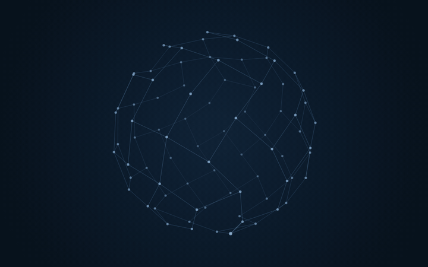
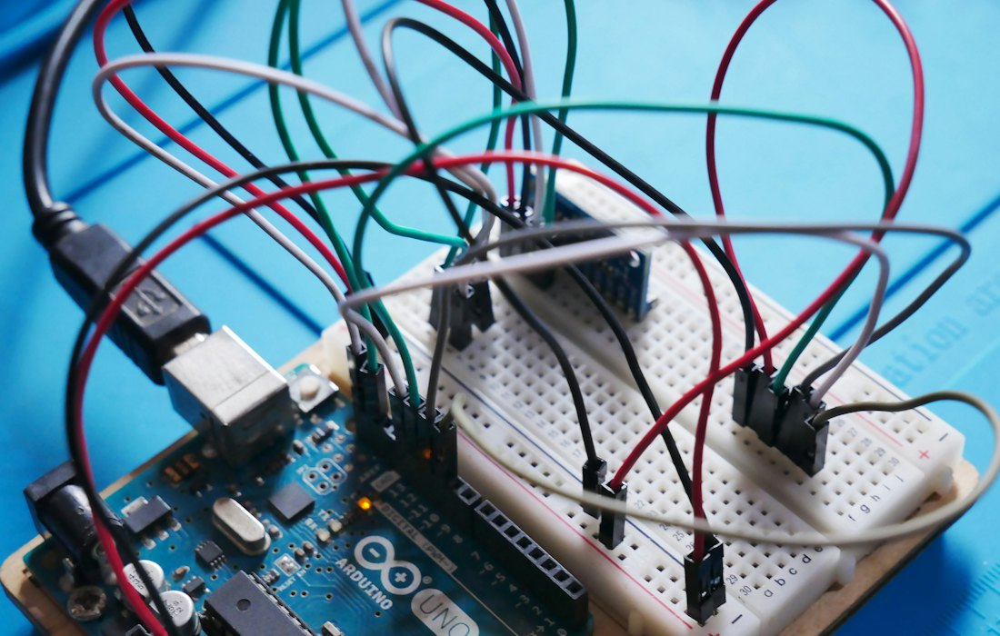
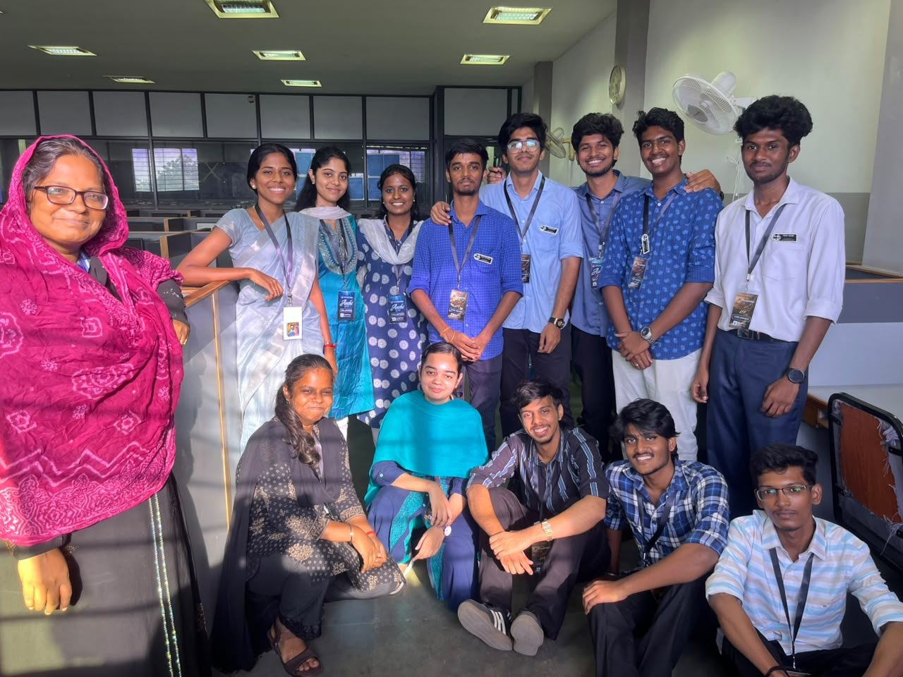
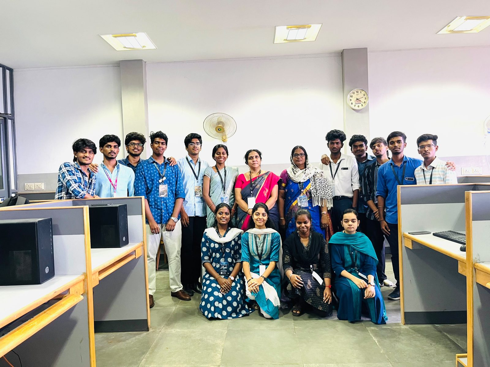

March 2024
Neural Network Based Attack Path Prediction Using Machine Learning in Cyber Security System
International Journal of Intelligent Systems and Applications in Engineering, Vol. 12, No. 21s, pp. 2611–2617, March 2024.
Assistant Professor
Velammal Engineering College, Chennai
Dynamic assistant professor with expertise in network security, passionate about engaging in multifaceted research and advancing practical solutions through ongoing learning.

March 2024
International Journal of Intelligent Systems and Applications in Engineering, Vol. 12, No. 21s, pp. 2611–2617, March 2024.
June 2026
June 2026; ISBN: 979-8-3315-7236-5
Filed
Application No.: 202641095019
Published
Fundamentals, Programming, Networks, Artificial Intelligence, Cybersecurity, Cloud Computing, Data Science, IoT, Blockchain, and Emerging Technologies
Published by Zenodo · ISBN: 979-8-18760156-1
Velammal Engineering College, Chennai
Teaching
Delivered instruction in Data Structures, Network Essentials, Cyber Forensics and Laws, Quantum Computing, Python Programming, and C Programming, fostering student engagement and understanding.
Augusta Hitech Soft Solutions Pvt. Ltd, Coimbatore
May 2024
Velammal Engineering College, Surapet, Chennai
May 2022
Velammal Engineering College, Surapet, Chennai
May 2018
Velammal Vidhyashram, Surapet, Chennai
May 2016
Velammal Vidhyashram, Surapet, Chennai
A project to detect faces using OpenCV.

2An IoT project using Arduino for smart home development.
A project that maintains and manipulates the attendance of each student.
Machine Learning Project using the LSTM Algorithm.
Project in the Wireless sensor network domain using the Machine Learning Algorithm LRCN.


18–23 May 2026
A six-day online Faculty Development Programme (FDP).
6 March 2026
A Cybersecurity technical workshop by Mr. Vinod Senthil, Managing Director and CEO, DigiAlert.
19 September 2025
Technical session by Mrs. Elakkia A. G., Founder and Senior Project Consultant, M/s ENSLOT, along with interns Sujithra S., Samitha R., and Gowtham R.
17 August 2024
A technical session for second-year students by Ms. Manishma S., Software Engineer, Light & Wonder.
18 February 2025
A technical session by Mr. Karthikeyan K., Product Security, Logitech.
27 February 2025
A technical session by Mr. Jaswant R., Product Security, Logitech.
20 February 2025
A technical session by Mr. Sriram Kesavan, Founder and Director of Security, TG CyberLabs – Secufra Labs.
22 June 2025
A technical session by Mr. Pradhan Vijayakumar, Managing Director, Zero2Infynite.
2 August 2025
National-level CSE (Cyber Security) symposium at Velammal Engineering College.
19 September 2026
Inter-college-level Capture the Flag (CTF) cybersecurity competition.
3 February 2026
Intra-college-level Capture the Flag (CTF) cybersecurity competition.
An Industrial Training Programme conducted by J7 Technology Solutions Pvt. Ltd., Tenkasi.
Completed. Conducted by the Department of Computer Science and Engineering at NITTTR, Chandigarh, from 25–29 November 2024.
Completed through the NPTEL–AICTE Faculty Development Programme (FDP).
Participated at Panimalar Engineering College, from 1–6 December 2025.
English Proficient (C2)
Tamil Native
YRC Member (2018–2022)
Sports, Dance, Creative works, Designing, Research and Journal.